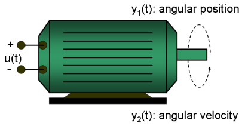
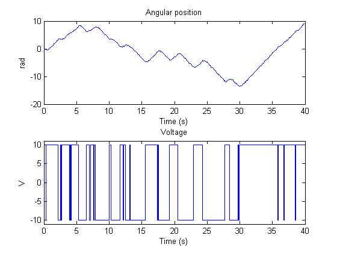
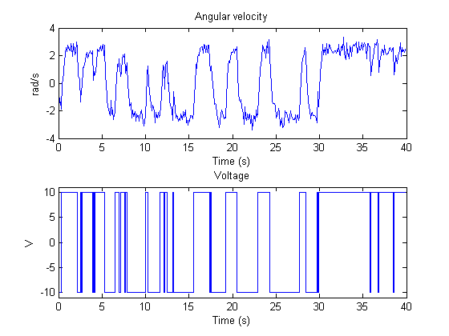
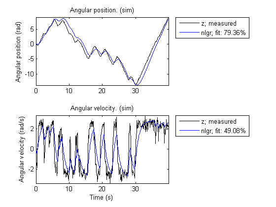
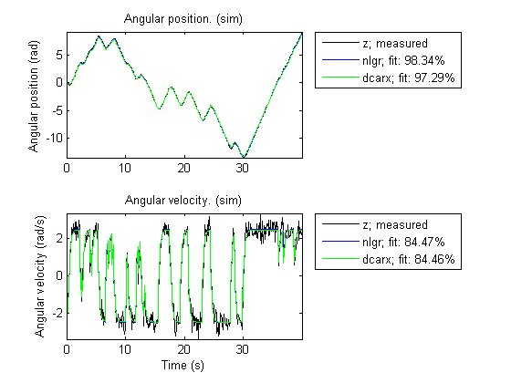
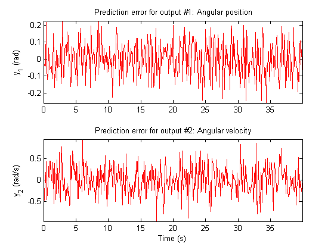
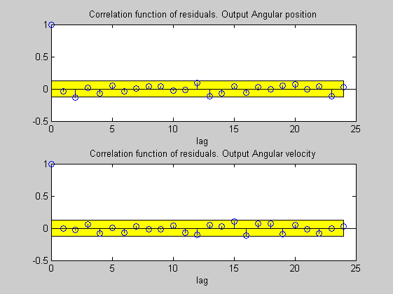
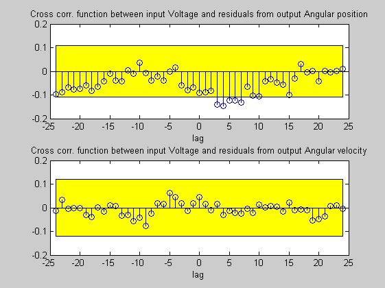
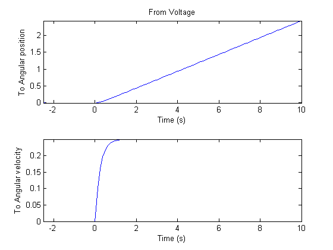

Linear Modeling of a DC-Motor: Using MATLAB File to Describe System of Equations
In this demo we go through the basic commands for constructing, estimating and analyzing IDNLGREY models. This kind of modeling is suitable for systems that can be described by a nonlinear state-space structure in continuous or discrete time. It is the nonlinear possibility that constitutes the basic difference between IDNLGREY and IDGREY models.
In the modeling steps that follow, we will illustrate how to perform IDNLGREY modeling using a rather simple DC-motor as example.

Figure 1: Schematic diagram of a DC-motor.
This system is essentially linear and was here chosen so that the user readily can compare the modeling steps pursued when doing IDNLGREY and IDGREY modeling, respectively. The latter approach is carried out in the linear iddemo number 6 (Building structured and user-defined models).
The user is able to affect how IDNLGREY modeling is to be carried out through a number of assignable properties (e.g., choice of estimation algorithm). Detailed information about these properties is found in the documentation. A more condensed presentation of the properties is also available through the command "idprops"; see "help idprops".
Contents
Input-Output Data
We start our IDNLGREY modeling effort by loading the available DC-motor data. The data contains two outputs y: the first is the angular position [rad] and the second is the angular velocity [rad/s] of the motor shaft. There are 400 samples of data points available and the sampling interval is 0.1 seconds. The input u is the voltage applied to the DC-motor. As in the linear parts of System Identification Toolbox™, we also here create an IDDATA object to contain the data. For better bookkeeping, we enter various data about the inputs and outputs (their names and units) as well as some time related properties of the data (time of the first sample and time unit).
load(fullfile(matlabroot, 'toolbox', 'ident', 'iddemos', 'data', 'dcmotordata')); z = iddata(y, u, 0.1, 'Name', 'DC-motor'); set(z, 'InputName', 'Voltage', 'InputUnit', 'V'); set(z, 'OutputName', {'Angular position', 'Angular velocity'}); set(z, 'OutputUnit', {'rad', 'rad/s'}); set(z, 'Tstart', 0, 'TimeUnit', 's');
The input-output data are shown in two plot windows.
figure('Name', [z.Name ': Voltage input -> Angular position output']); plot(z(:, 1, 1)); % Plot first input-output pair (Voltage -> Angular position). figure('Name', [z.Name ': Voltage input -> Angular velocity output']); plot(z(:, 2, 1)); % Plot second input-output pair (Voltage -> Angular velocity). 
Figure 2: Input-output data from a DC-motor.
Linear Modeling of the DC-Motor
At this point we need to specify a model structure of the DC-motor. The dynamics of the motor is rather well known. If we choose x(1) as the angular position [rad] and x(2) as the angular velocity [rad/s] of the motor, it is straightforward to set up a linear state-space structure of the following form (neglecting disturbances; see pages 95-97 in L. Ljung, System Identification - Theory for the User, 2nd ed., Prentice Hall, 1999, for the derivation):
d | 0 1 | | 0 | -- x(t) = | | x(t) + | | u(t) dt | 0 -1/tau | | k/tau |
| 1 0 |
y(t) = | | x(t)
| 0 1 |The parameter tau is here the time-constant [s] of the motor and k [rad/(V*s)] is the static gain from the input to the angular velocity. (See Ljung (1999) for how tau and k relate to the physical parameters of the motor.)
The next step in our modeling effort is to enter this information into a modeling file. Below we describe the DC-motor using an MATLAB® file, but it is also possible to use C MEX-files (to gain computational speed), P-files as well as function handles. See "Tutorials on Nonlinear Grey Box Model Identification: Creating IDNLGREY Model Files" for more details about this.
The DC-motor modeling file is called dcmotor_m.m, and it is structured as follows.
function [dx, y] = dcmotor_m(t, x, u, tau, k, varargin) %DCMOTOR_M The same DC-motor that was modeled by IDGREY of SITB.
% Output equations.
y = [x(1); ... % Angular position.
x(2) ... % Angular velocity.
]; % State equations.
dx = [x(2); ... % Angular position.
-(1/tau)*x(2)+(k/tau)*u(1) ... % Angular velocity.
];It is worth stressing that the model file should always be structured as above. First, two outputs should always be returned: dx is the right-hand side(s) of the state-space equation(s), and y is the output equation(s). Secondly, the first three input arguments should be t: the time, x: the state vector ([] for static systems), and u: the input vector ([] for time-series). Then follows the ordered list of parameters (which can be scalars, column vectors, or 2-dimensional matrices), and finally we have varargin, which must always be there in order to allow the passing of auxiliary input arguments (see "Tutorials on Nonlinear Grey Box Model Identification: Creating IDNLGREY Model Files").
Having written the function describing the equations of the DC-motor we now create an IDNLGREY object reflecting the modeling situation. Such a model describes how the input(s) generate(s) the output(s) via the state equation(s). In practice there will also be disturbances that affect the output(s) in more or less complicated ways. An IDNLGREY model does not explicitly model the disturbances, but assumes that these are just added to the output(s). This means that an IDNLGREY model belongs to the family of so-called Output-Error (OE) models. In particular, without a noise model, past outputs will not influence future outputs. This means that predictions of outputs for any prediction horizon k will actually coincide with simulated outputs.
FileName = 'dcmotor_m'; % File describing the model structure. Order = [2 1 2]; % Model orders [ny nu nx]. Parameters = [1; 0.28]; % Initial parameters. Np = 2. InitialStates = [0; 0]; % Initial initial states. Ts = 0; % Time-continuous system. nlgr = idnlgrey(FileName, Order, Parameters, InitialStates, Ts, ... 'Name', 'DC-motor');
SET is next used to assign values to some additional properties of the IDNLGREY model, and through SIZE (without output argument) we get some basic information about the created model.
set(nlgr, 'InputName', 'Voltage', 'InputUnit', 'V', ... 'OutputName', {'Angular position', 'Angular velocity'}, ... 'OutputUnit', {'rad', 'rad/s'}, ... 'TimeUnit', 's'); size(nlgr)
Nonlinear state space model with 2 outputs, 1 input, 2 states, and 2 parameters (2 free).
We also assign names and units to the (initial) states and to the model parameters using SETINIT and SETPAR. Notice that setting of names and units are not required (these properties are assigned default values when IDNLGREY is called), but it will simplify bookkeeping and documentation. SETINIT and SETPAR are also useful for assigning values, minima, maxima, and estimation status to all initial states or parameters simultaneously (see the discussion below).
setinit(nlgr, 'Name', {'Angular position' 'Angular velocity'}); setinit(nlgr, 'Unit', {'rad' 'rad/s'}); setpar(nlgr, 'Name', {'Time-constant' 'Static gain'}); setpar(nlgr, 'Unit', {'s' 'rad/(V*s)'});
Basic information about the entered IDNLGREY object is obtained by just typing the name of the model object at the MATLAB command prompt:
nlgr
Time-continuous nonlinear state-space model defined by 'dcmotor_m' (MATLAB file):
dx/dt = F(t, u(t), x(t), p1, p2)
y(t) = H(t, u(t), x(t), p1, p2) + e(t)
with 1 input, 2 states, 2 outputs, and 2 free parameters (out of 2).
More detailed information about the properties of the IDNLGREY object is obtained using GET. As can be seen, the IDNLGREY object share many properties of a typical parametric linear model object: 'Name', 'Ts', 'TimeUnit', 'InputName', 'InputUnit', 'OutputName', 'OutputUnit', 'CovarianceMatrix' (if it is 'Estimate', then it will contain the estimated Np-by-Np covariance matrix of the parameter vector; Np is the total number of model parameters), 'NoiseVariance' (the Ny-by-Ny covariance matrix of the model innovations E; Ny is the number of outputs), 'Algorithm', 'EstimationInfo', 'Notes', and 'UserData'. 'TimeVariable' is linked to 'TimeUnit' and is only used for presentation purpose in PRESENT/DISPLAY, whereas 'FileName', 'Order' and 'FileArgument' specify the model file (or model function handle) and properties related to it.
get(nlgr)
Name: 'DC-motor'
Ts: 0
TimeUnit: 's'
TimeVariable: 't'
InputName: {'Voltage'}
InputUnit: {'V'}
OutputName: {2x1 cell}
OutputUnit: {2x1 cell}
FileName: 'dcmotor_m'
Order: [1x1 struct]
Parameters: [2x1 struct]
InitialStates: [2x1 struct]
FileArgument: {}
CovarianceMatrix: 'Estimate'
NoiseVariance: [2x2 double]
Algorithm: [1x1 struct]
EstimationInfo: [1x1 struct]
Notes: {}
UserData: []
The initial states and the model parameters deserve special attention. Both these properties are stored as so-called structure arrays, with elements specifying the properties of an individual initial state/parameter. Each such quantity is described by six properties: 'Name', 'Unit', 'Value', 'Minimum', 'Maximum', and 'Fixed'. See "idprops idnlgrey InitialStates" and "idprops idnlgrey Parameters" for more information about these. The DC-motor holds 2 (initial) states and 2 model parameters. Information about the first state (angular position) and the second model parameter (static gain) are obtained through
nlgr.InitialStates(1) nlgr.Parameters(2)
ans =
Name: 'Angular position'
Unit: 'rad'
Value: 0
Minimum: -Inf
Maximum: Inf
Fixed: 1
ans =
Name: 'Static gain'
Unit: 'rad/(V*s)'
Value: 0.2800
Minimum: -Inf
Maximum: Inf
Fixed: 0
GETINIT and GETPAR are useful for retrieving 'Name', 'Unit', 'Value', 'Minimum', 'Maximum', or 'Fixed' information for all initial states or model parameters in one call. Information (stored in a cell array) about which initial states that are fixed (not estimated) and the minima of all model parameters are obtained through
getinit(nlgr, 'Fixed') getpar(nlgr, 'Min')
ans =
[1]
[1]
ans =
[-Inf]
[-Inf]
Performance of the Initial DC-Motor Model
Before trying to estimate the parameters tau and k we simulate the output of the system with the guessed parameter values. We use the default differential equation solver (a Runge-Kutta 45 solver with adaptive step length adjustment) and set the absolute and relative error tolerances to rather small values (1e-6 and 1e-5, respectively). By this we can gain useful information about the solver's ability to solve the differential equations. The simulated and measured outputs are shown in a plot window. Notice that COMPARE (when called without output argument) will display both measured and simulated outputs of one or more models, whereas PREDICT, called with the same input arguments, will only display the simulated outputs.
nlgr.Algorithm.SimulationOptions.AbsTol = 1e-6; nlgr.Algorithm.SimulationOptions.RelTol = 1e-5; figure; compare(z, nlgr);
Figure 3: Comparison between measured outputs and the simulated outputs of the initial DC-motor model.
Parameter Estimation
The prediction error estimate of the parameters can now be computed using PEM (Prediction-Error identification Method). Let us in addition estimate the initial state vector.
setinit(nlgr, 'Fixed', {false false}); % Estimate the initial state. nlgr = pem(z, nlgr, 'Display', 'Full');
Criterion: Trace minimization
Scheme: Trust-Region Reflective Newton (LSQNONLIN, LargeScale = 'On')
--------------------------------------------------------------
Norm of First-order
Iteration Cost step optimality
--------------------------------------------------------------
0 1.39357 - -
1 0.111694 0.827 1.89e+003
2 0.0596717 0.106 44.4
3 0.0593535 0.0124 0.67
4 0.0593534 0.000834 0.00891
--------------------------------------------------------------
Performance of the Estimated DC-Motor Model
The estimated values of the parameters are well in line with those used to generate the input-output data. Information about the estimation process is stored in the 'EstimationInfo' property of an IDNLGREY object. Among other things, it contains information about how the model was estimated, e.g., solver and search method used, data set used for the estimation, and why the estimation was terminated.
nlgr.EstimationInfo
ans =
Status: 'Estimated model (PEM)'
Method: 'Solver: ode45; Search: lsqnonlin'
LossFcn: 0.0011
FPE: 0.0011
DataName: 'DC-motor'
DataLength: 400
DataTs: {[0.1000]}
DataDomain: 'Time'
DataInterSample: {'zoh'}
WhyStop: 'Change in cost was less than the specified tolerance.'
UpdateNorm: []
LastImprovement: []
Iterations: 4
InitialGuess: [1x1 struct]
Warning: ''
EstimationTime: 4.6875
To evaluate the model's quality and to illustrate the improvement compared to the initial model we can simulate the model outputs using the actual input and compare the result with the actual outputs. As can be seen in the just opened figure, the estimated model is clearly quite good at capturing the dynamics of the DC-motor.
figure; compare(z, nlgr);

Figure 4: Comparison between measured outputs and the simulated outputs of the estimated IDNLGREY DC-motor model.
COMPARE allows comparisons between several models, including linear ones. To show this, we build a second order ARX model and compare its performance with the performance of the estimated IDNLGREY model.
dcarx = arx(z, 'na', [2 2; 2 2], 'nb', [2; 2], 'nk', [1; 1]); figure; compare(z, nlgr, dcarx);
Figure 5: Comparison between measured outputs and the simulated outputs of the estimated IDNLGREY and ARX DC-motor models.
PE can be used to check that the prediction errors obtained with the IDNLGREY model are small and that they are centered around zero (non-biased).
figure; pe(z, nlgr);
Figure 6: Prediction errors obtained with the estimated IDNLGREY DC-motor model.
We can also check that the residuals ("leftovers") of the IDNLGREY model, i.e., what is left unexplained by the model, are small. We can do this by calling the function RESID, where we can advance from one plot to another by pressing any key on the keyboard:
figure('Name', [nlgr.Name ': residuals of estimated model']);
resid(z, nlgr);When executed, the RESID command generates the following two plots:


Figure 7: Residuals obtained with the estimated IDNLGREY DC-motor model.
The step response of the model is also often of interest. It is obtained through the STEP command. For the IDNLGREY DC-motor model, a unit input step results in an angular position showing a ramp-type behavior and to an angular velocity that stabilizes at a constant level.
figure('Name', [nlgr.Name ': step response of estimated model']); step(nlgr);
Figure 8: Step response with the estimated IDNLGREY DC-motor model.
The quality of the estimated model can to some extent be assessed by looking at the estimated covariance matrix and the estimated noise variance. A "small" value of the (i, i) diagonal element of the covariance matrix indicates that the i:th model parameter is important for explaining the system dynamics when using the chosen model structure. "Small" noise variance (covariance for multi-output systems) elements are also a good indication that the model is able to capture the estimation data in a good way.
nlgr.CovarianceMatrix nlgr.NoiseVar
ans =
1.0e-004 *
0.1521 0.0015
0.0015 0.0007
ans =
0.0099 -0.0004
-0.0004 0.1094
Finally, the present command provides more information about the estimated IDNLGREY model. Among other things, it displays the values of the initial states and the model parameters, and, for the parameters, the estimated uncertainty (standard deviation).
present(nlgr);
Time-continuous nonlinear state-space model defined by 'dcmotor_m' (MATLAB file):
dx/dt = F(t, u(t), x(t), p1, p2)
y(t) = H(t, u(t), x(t), p1, p2) + e(t)
with 1 input, 2 states, 2 outputs, and 2 free parameters (out of 2).
Input:
u(1) Voltage(t) [V]
States: initial value
x(1) Angular position(t) [rad] xinit@exp1 0.0302986 (est) in [-Inf, Inf]
x(2) Angular velocity(t) [rad/s] xinit@exp1 -0.133728 (est) in [-Inf, Inf]
Outputs:
y(1) Angular position(t) [rad]
y(2) Angular velocity(t) [rad/s]
Parameters: value standard dev
p1 Time-constant [s] 0.243646 0.00390033 (est) in [-Inf, Inf]
p2 Static gain [rad/(V*s)] 0.249645 0.00027217 (est) in [-Inf, Inf]
The model was estimated from the data set 'DC-motor', which
contains 400 data samples.
Loss function 0.00107462 and Akaike's FPE 0.00108536
Created: 29-Jun-2010 23:39:59
Last modified: 29-Jun-2010 23:40:08
Conclusions
This demo has illustrated the basic tools for performing IDNLGREY modeling. Most of the available commands (except for PREDICT and SIM) were used. In other demos we show how to use IDNLGREY in more advanced modeling situations, for building nonlinear continuous- and discrete-time models, nonlinear time-series as well as for building nonlinear static models. We also show how to write and use C MEX model-files, how to handle non-scalar parameters, the impact of certain algorithm choices, and much more.
Additional Information
For more information on identification of dynamic systems with System Identification Toolbox visit the System Identification Toolbox product information page.